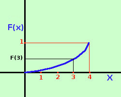
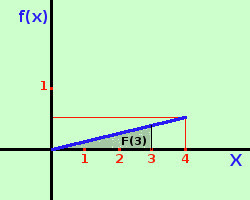

|
Da notare la relazione esistente fra i due grafici:il valore dell'area del grafico della funzione densita' corrisponde al valore della funzione di ripartizione   Cioe', ad esempio, il valore F(3) corrisponde all'area compresa tra la funzione densita' f(x) e l'asse delle x da 0 a 3 |